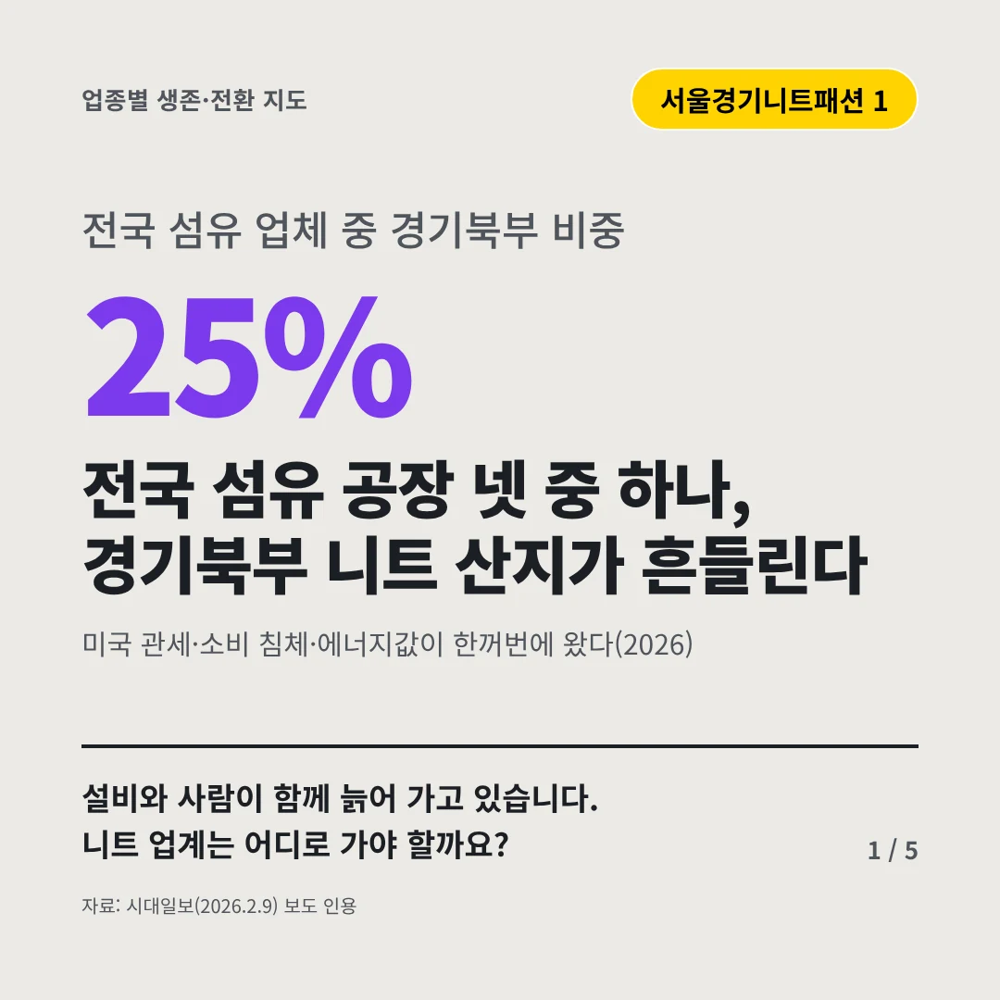
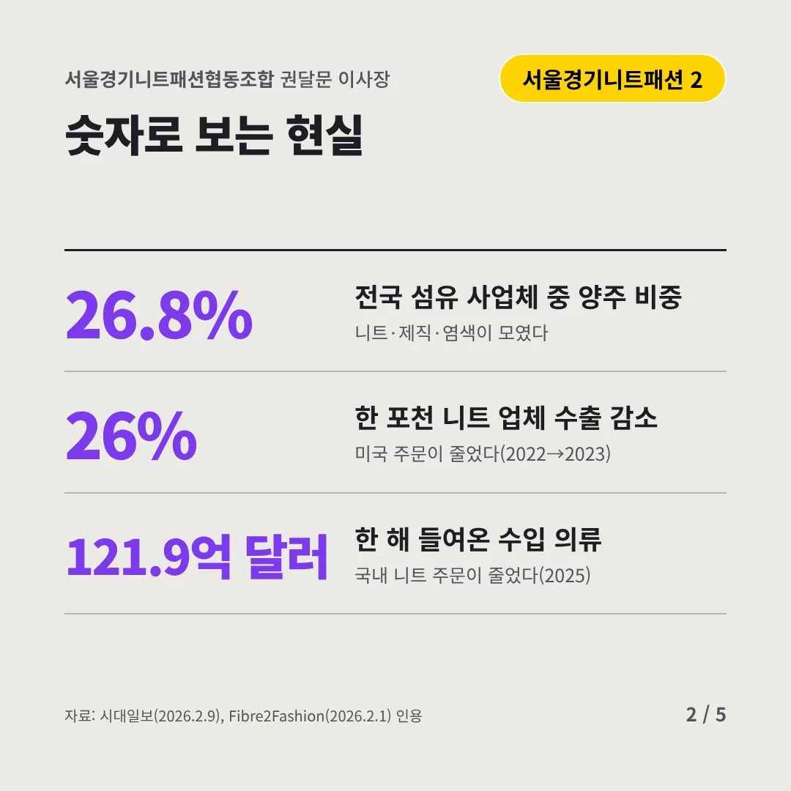
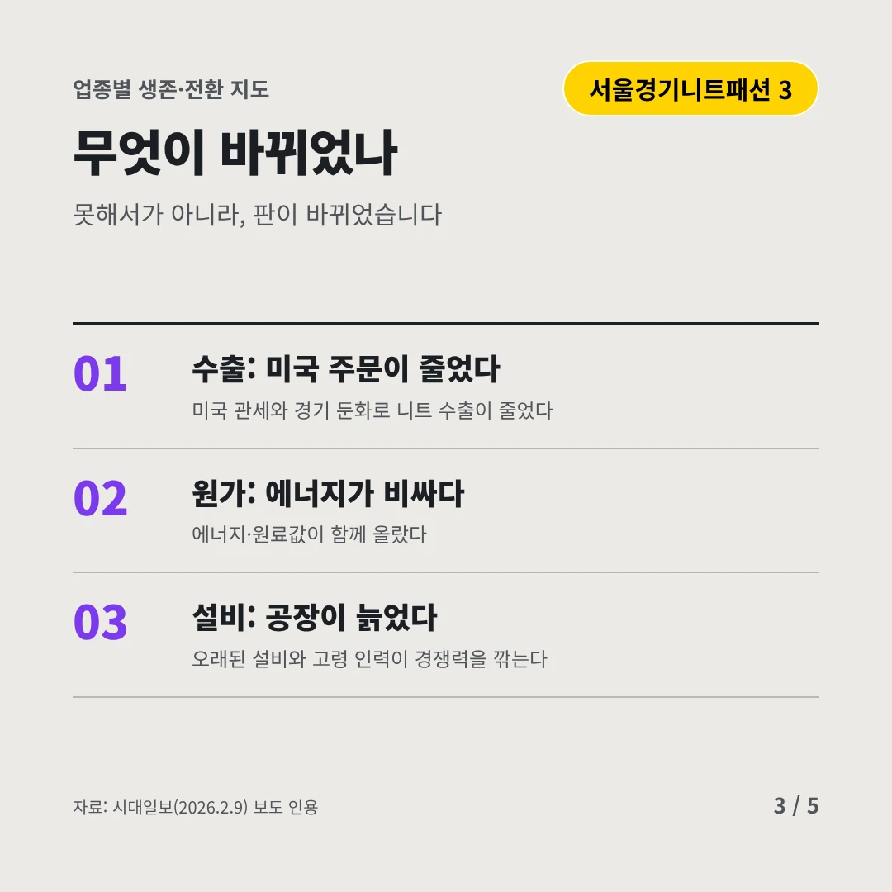
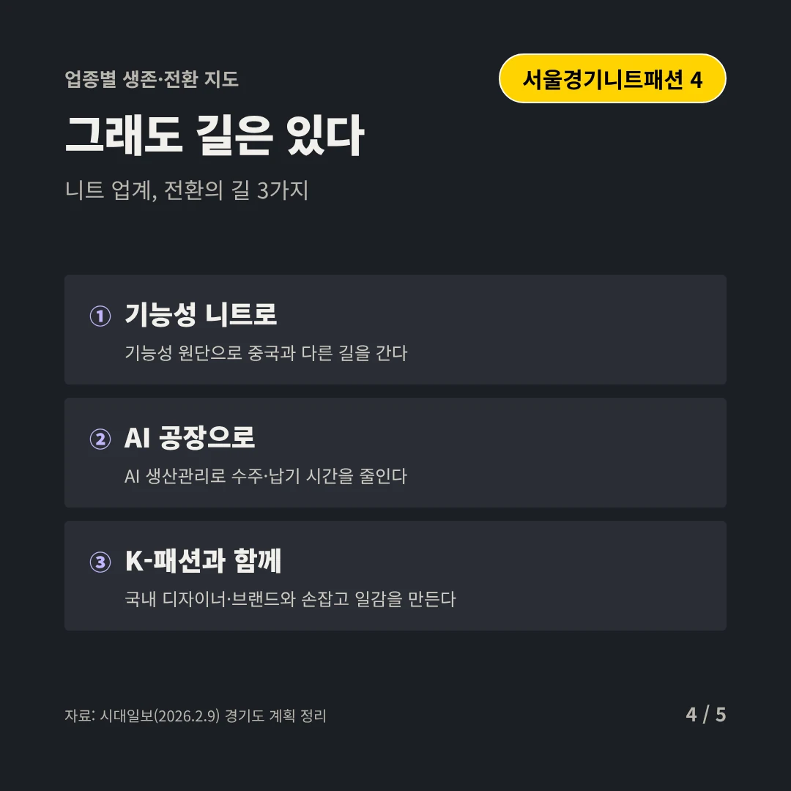
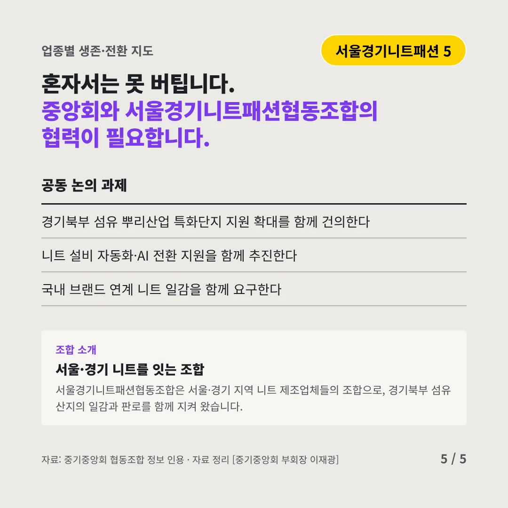
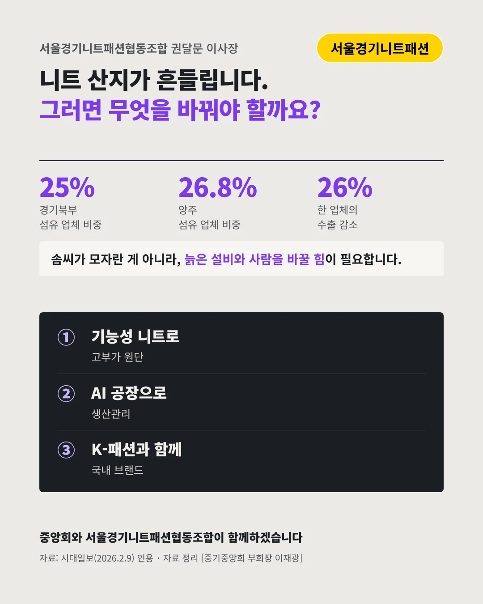

서울경기니트패션협동조합
전국 섬유 공장 넷 중 하나, 경기북부 니트 산지가 흔들린다
25% 전국 섬유 업체 중 경기북부 비중






설비와 사람이 함께 늙어 가고 있습니다. 니트 업계는 어디로 가야 할까요?
숫자로 보는 현실
- 26.8%전국 섬유 사업체 중 양주 비중니트·제직·염색이 모였다
- 26%한 포천 니트 업체 수출 감소미국 주문이 줄었다(2022→2023)
- 121.9억 달러한 해 들여온 수입 의류국내 니트 주문이 줄었다(2025)
무엇이 바뀌었나
- 수출: 미국 주문이 줄었다미국 관세와 경기 둔화로 니트 수출이 줄었다
- 원가: 에너지가 비싸다에너지·원료값이 함께 올랐다
- 설비: 공장이 늙었다오래된 설비와 고령 인력이 경쟁력을 깎는다
그래도 길은 있다
- 기능성 니트로기능성 원단으로 중국과 다른 길을 간다
- AI 공장으로AI 생산관리로 수주·납기 시간을 줄인다
- K-패션과 함께국내 디자이너·브랜드와 손잡고 일감을 만든다
한 장 요약

조합 소개
서울경기니트패션협동조합은 서울·경기 지역 니트 제조업체들의 조합으로, 경기북부 섬유 산지의 일감과 판로를 함께 지켜 왔습니다.
자료: 시대일보(2026.2.9), Fibre2Fashion(2026.2.1)